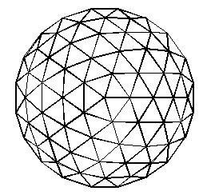

Project Overview
Pillow domes were invented by
Jay Baldwin.
See also
the film "Ecological Design: Inventing the Future".
He took 2 layers
of DuPont's Tefzel film and heat sealed them together. He then took these
triangular shaped "air" pillows and attached them to the triangular
frame of a geodesic dome. Once these thin film layers were attached
to the dome's frame, he injected a gas into the pillows.
These Pillow Domes have a tremendous potential for providing
durable, transparent environmental enclosing structures while using
a minimum amount of material. They would be ideal for enclosing, for
example, water purification systems like those being developed
by
Dr. John Todd.
(See the material at
Living Technologies web pages.)
I am currently working with students at the State University of
New York (SUNY), Oswego campus to construct a 25 foot diameter
pillow dome. Together with Prof. John Belt, I hope to construct
this dome with the students early next year. Jay Baldwin will
be assisting us as our technical consultant.
Some of the advantages of a pillow dome over conventional
dome construction are
- Flexable covering. Uneven heating over the
outside surface of the dome will cause
uneven expansion and contraction. Because the thin films have
the ability to stretch this is not a problem for the
pillow domes.
- Water tight. Jay's method for attaching the thin film insures that
the dome will not leak. Leakage has been a problem in the past for
convensional domes, mostly due to the joints becoming loose with the
uneven expansion and contraction mentioned above.
- Minimum shadow.
The
Biosphere 2 project had a problem because
there wasn't enough sunlight passing through the dome surface/frame
to grow the food they wanted to. With the pillow dome, we are approaching
the maximum amount of sun light passing through the dome to the
space enclosed.
- Maintanance. Pillow domes require extreemely low maintenance.
- Better than single layer films. Domes (or other structures)
covered with a single layer of film tend to "flap in the wind". This
weakens the film which shortens its lifetime. There is no flap with
Pillow domes.
- Better sound quality. Because the interior surface of Pillow
domes are convex triangular bubbles, sounds inside the dome are
dispersed rather than focused as would be the case with a flat
or convex wall surface.
There are "problems" with pillow domes which need further
investigation. These include
- Repair. To repair a punctured pillow is not easy. Its not
complex, but its not easy.
- Its not a do-it-yourself type of project. The pillows are made
by heat sealing at least two layers of film together. The average
do-it-yourselfer doesn't have easy access to an impulse heat sealer.
But once you *have* the pillows heat sealed, the rest
is straight forward.
- The size of the triangular pillows are unique for each size and frequency
dome. It would be nice to be able to use "old" pillows in a new, different
sized dome, but the triangular framing of domes are different for
each change in radius and frequency. This might be overcome by some
ingenious re-designning of dome framing.
List of Project Components...
Here is a Table of Contents style list for the Pillow Dome Project
components
which I am exploring.
NOTE: Jay reminds us that a key element in any dome project is
the foundation upon which the dome will be attached. With
the air flow over the surface of the dome you can get a
large *lifting* force on the dome. If it is not
securely fastened to the ground it *will* blow away.
Usage Note: My work is copyrighted. You may use my work but
you may not include my work, or parts of it, in any for-profit
project
without my consent.